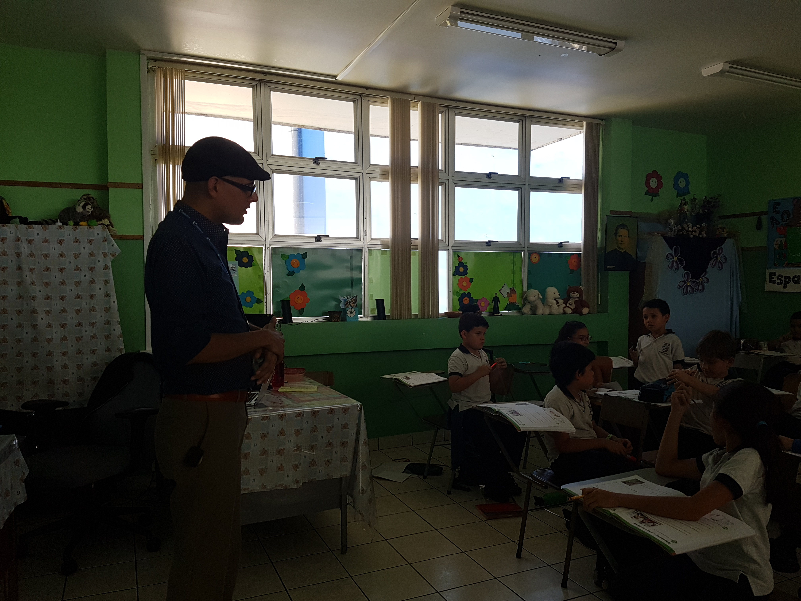

El trabajo de la Iglesia se desenvuelve en torno a la Pastoral, y los docentes de Educ. Religiosa entran ahí para formar en la fe al estudiante. Muy poco después de salir, se encontró con la oportunidad de trabajar en CEDES como docente, gracias a un amigo al cual le ofrecieron trabajo aquí y este lo recomendó ya que el conocía el tema. Viene de un colegio académico donde la formación Religiosa es muy libre ya que es más social y opcional. Lo cual es muy diferente. En CEDES la formación académica religiosa es muy fuerte y constante. Para él CEDES es más que un trabajo sino una experiencia.
